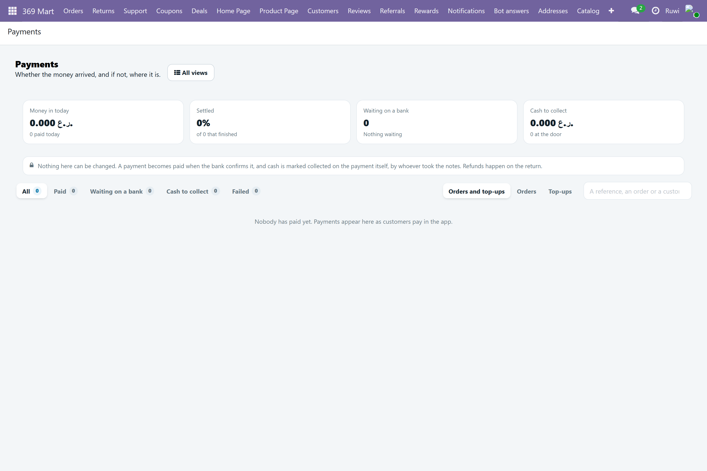
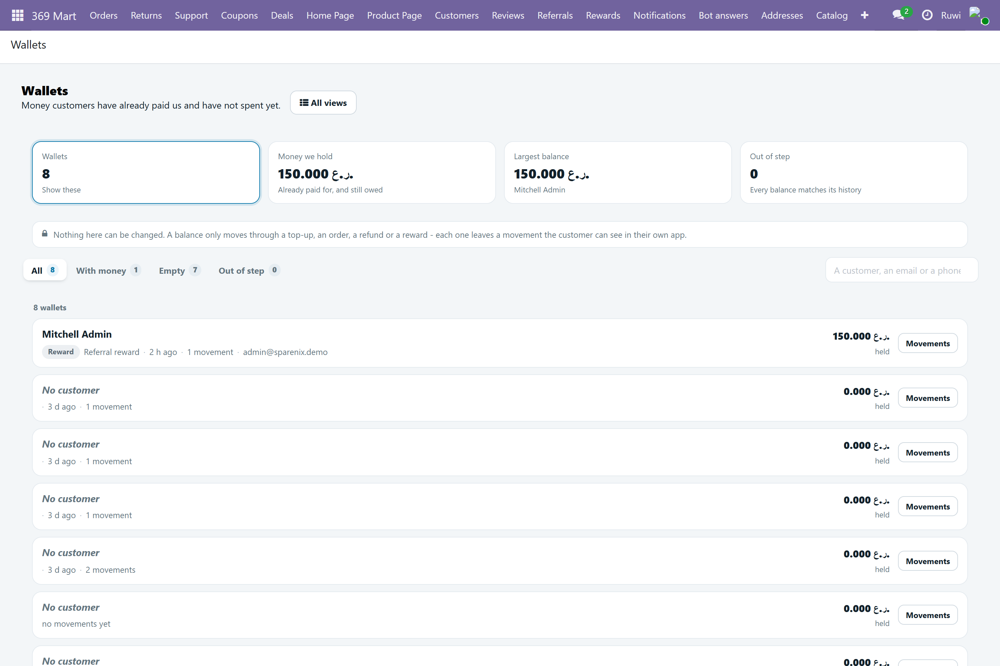
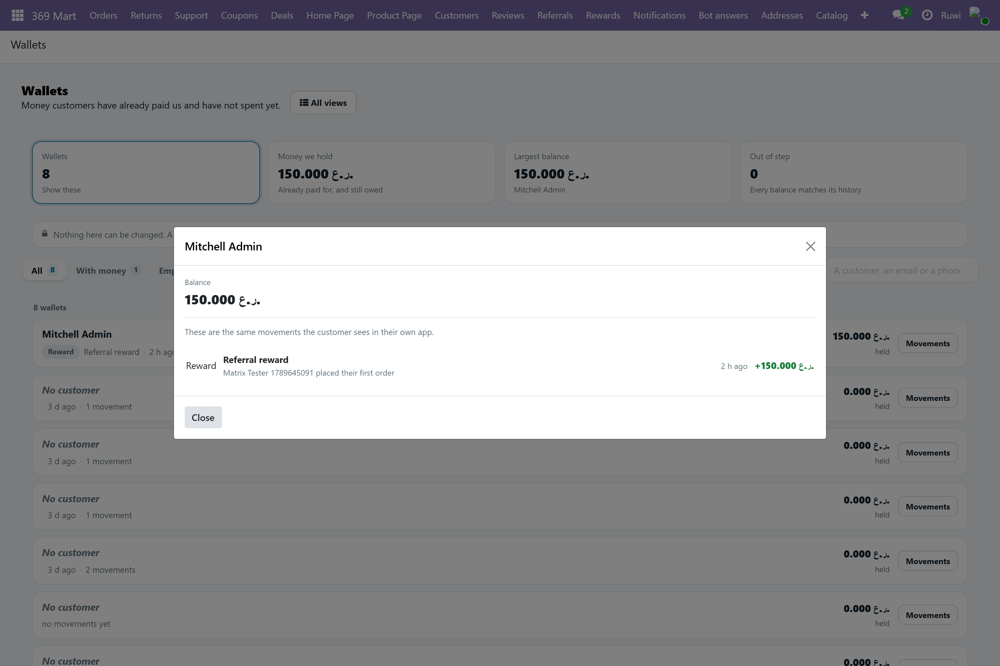

369 Mart Payments & Wallet handles the money side of the shop. When a customer pays in the shop app or on the website, the backend records a payment and marks it Paid only when the bank or payment company confirms it. Cash on delivery stays waiting until the cash is actually collected at the door. It also runs the 369 Wallet: a money balance per customer, where every change leaves a line in its history, called a movement.
Staff get two read-only desks, Payments and Wallets, and the shop's Settings screen, where you choose which ways of paying the checkout offers. No screen here can mark money as paid or change a wallet balance by hand. The only button that settles money is Cash collected, for cash brought back from a delivery.
| Word | What it means |
|---|---|
| Payment provider | A bank or payment company (also called a gateway) that takes card, UPI or net-banking payments for you. Cash on delivery and the 369 Wallet are listed as providers too. |
| Cash on delivery | The customer pays the rider in cash at the door. Counted as paid only once the cash is collected. |
| 369 Wallet | The customer's money balance in the shop. Refunds and rewards land here, and it can pay for orders. |
| Top-up | Money the customer adds to their own wallet by paying through a provider. |
| Movement | One line in a wallet's history: Added, Spent, Refunded or Reward. |
| Out of step | A wallet whose balance does not equal what its movements add up to. That means a fault, not something the customer did. |
| Saved method | A card or UPI ID the customer chose to keep for next time. Only the last four digits of a card are kept. |
Part 1 – Setting Up shows where the screens live and walks through the Store, Payments and Alerts tabs of the Settings screen, plus the wallet's fixed limits. Part 2 – Everyday Use covers the Payments desk, collecting cash, the Wallets desk, the full list views and what the customer sees. Part 3 – Keeping It Secure & In Order explains how money and card details are protected and who can do what.
Done once by an administrator. If the checkout already offers the right ways to pay, skip to Part 2.
Open 369 Mart from the main menu. This module adds:
The two desks and Settings are shown to the Website designer and the Administrator (Settings). The two "all views" entries are shown to the Administrator (Settings) only.
Open Store → Settings. The screen opens on Store. This tab holds your company's details, so the same name and GSTIN print on your invoices.
Each tab is saved on its own. When you change something, Unsaved changes appears beside Reset (undo) and Save changes, and a Settings saved message confirms the save.
The shop logo is uploaded in the staff console, on the same Store tab there: Shop logo, with Upload logo (a PNG, JPG or WebP picture under 3 MB; a PNG with a clear background works best) and Use the original logo to go back to the standard 369 Mart logo. Press Save changes after choosing it. The website and every page sent by link (the WhatsApp product page, the sign and pay page and the payment pages) then show it. The website can take up to five minutes to show a new logo. This logo is kept apart from the company logo printed on invoices.
Pick the Payments tab. The checkout offers exactly the ways of paying that are switched on here. Each row shows a provider, a coloured tag (On, Test mode or Off) and a short line saying what it does:
Under the rows, a line says how many other providers are switched off and kept out of this list. Press Open payment providers to go to the full provider list, where an administrator enters a gateway's keys and switches it on.
| Provider | What this screen can do |
|---|---|
| Cash on delivery | Switch on or off, and set the limit. |
| 369 Wallet | Switch on or off. |
| Card / UPI gateway | Switch off only. Switching on is refused until its keys are set up under Open payment providers. |
Pick the Alerts tab. Two switches, both on by default:
These alerts appear in the staff console. Email and SMS alerts are not set up.
Some tabs appear only when the module that owns them is installed:
Two numbers are set when the module is installed. The Settings screen has no field for them:
A wallet can never go below zero. A payment that asks for more than the balance is refused, and the balance is left as it was.
Reading the desks and collecting cash. Both desks refresh on their own: Payments every 30 seconds, Wallets every minute.
Open 369 Mart → Money → Payments. It lists the payments for orders and wallet top-ups, newest first.

| On the screen | What it does |
|---|---|
| Money in today | Money that arrived today, with how many payments that was. Orders paid entirely from wallets are left out (that money was counted when it was topped up). The line under the number says how many of those there were. |
| Settled | Of the payments started in the last 7 days that have finished, the share that went through. "of N that finished" tells you what it is out of. Payments still waiting are not counted. |
| Waiting on a bank | Payments still waiting for the bank to confirm. The line under it shows how long the oldest has waited. The number turns amber when it is not zero. |
| Cash to collect | Cash-on-delivery money still to be collected, and how many orders are at the door. |
| Tabs | All, Paid, Waiting on a bank, Cash to collect and Failed, each with a count. Clicking a tile opens its tab. |
| Kind and search | Show Orders and top-ups, only Orders or only Top-ups. Search by a reference, an order number or a customer's name. |
| All views | Opens Payments (all views). See step 4. |
Each row shows the customer, a status tag, a blue At the door tag for cash still waiting, the kind (Order, Wallet top-up or Saving a card), the method and provider, and how long ago it was made. Below that is the payment reference, the order number (click it to open the order) and any message from the bank. On the right is the amount, plus "and … from the wallet" when part was paid from the wallet.
A cash-on-delivery payment stays Waiting until someone confirms the cash arrived. There are two ways:
Open 369 Mart → Money → Wallets. This is money customers have already paid the shop and not spent yet. It is money the shop owes, not takings.

| On the screen | What it does |
|---|---|
| Wallets | How many wallets exist. Click to show them all. |
| Money we hold | All balances added up: "Already paid for, and still owed". |
| Largest balance | The biggest single balance and whose it is. |
| Out of step | Wallets whose balance disagrees with their own history. The number turns red when it is not zero, and a warning line appears above the list. |
| Tabs and search | All, With money, Empty, Out of step. Search by customer name, email or phone. |
Each row shows the customer, their last movement and when it was, the number of movements, their email, and the balance held. A wallet with no customer attached says No customer. A wallet that is out of step shows a red tag with both numbers: "Balance …, history …".
Press Movements to see a wallet's history. These are the same lines the customer sees in their own app, newest first, with Show older for more.

Advanced → Payments (all views) shows the same payments as a list or a board grouped by status. Above both is a strip of numbers: Collected today, Went through (a percentage with a 14-day bar chart), Waiting, Cash to collect and Wallet float (the money held in wallets; click it to open the wallets). Clicking a number filters the list.
Advanced → Wallets (all views) lists Customer, Balance (with Total held), Ledger, Agrees and Movements. It has the filters Balance disagrees with the ledger and Has money. A wallet's form shows the balance, the ledger total, whether they agree, and a Movements tab (When, Kind, Title, Detail, In, Out).
A card, UPI or net-banking payment becomes Paid only when the provider confirms it to the backend, after a security check. Nothing the shop app sends can mark it paid, and the transaction number shown to the customer comes from the provider, not the app. A repeated confirmation from the bank never pays twice. A top-up is added to the wallet exactly once.
Each customer has one wallet. The balance can change only by writing a movement, so the balance and the history always match. Any other attempt is refused with "The 369 Wallet balance can only change through a wallet movement, so that every change leaves a record the customer can see." Wallet movements are never deleted, even when an order is cancelled. Payments for the same customer are handled one at a time, so two payments at once cannot overspend.
The full card number never reaches the backend. The provider takes it on its own payment form, and the shop keeps only the brand, last four digits, name, expiry and bank. Anything shaped like a card number is refused: "A saved payment method must never hold a card number." If the app tries to send a card number, it is turned away with "Card details must be entered on the payment form, not sent to us."
A customer can reach only their own saved methods, wallet and payments. Asking for someone else's gets the same "not found" answer as a made-up number, so nobody can find out whether another customer's record exists.
| Role | What they can do |
|---|---|
| Website designer | Opens the Payments and Wallets desks and Store → Settings. Can read every tab, but saving the Store tab is refused. |
| Administrator (Settings) | Everything above, plus saving all Settings tabs, Payments (all views) with Cash collected, Wallets (all views), and entering gateway keys under Open payment providers. |
| Internal user | No payment or wallet menus. |
| Customer | Pays, tops up, and saves or removes their own cards and UPI IDs in the shop app. Sees only their own wallet. |
| State | Meaning | How to change it |
|---|---|---|
| Never sent | Started, but the customer never submitted it. Not money in. | — |
| Waiting | Waiting for the bank, or cash still to collect (At the door). | The bank confirms; for cash, the door code or Cash collected. The customer can cancel it. |
| Held by the bank | The bank is holding the money but has not paid it over. Not money in yet. | The bank finishes it. |
| Paid | The money is in. | Final. Refunds go through the order or the return. |
| Cancelled | Given up, for example by the customer. Any wallet part was returned. | Final. |
| Failed | Declined or errored, with the bank's reason. Any wallet part was returned. | Final. The customer pays again. |
| Kind | When it happens | Balance |
|---|---|---|
| Added | A confirmed top-up (Money added). | Up, within the 10,000 limit. |
| Spent | Wallet money used on an order. | Down. Never below zero. |
| Refunded | Money given back: a failed payment's wallet part, a cancellation, a return. | Up, even past the limit. |
| Reward | A reward paid into the wallet, such as a referral reward. | Up, within the limit. |
| What you see | What to do |
|---|---|
| Customer: "Cash on delivery is available on orders up to …" | The cash to collect is over the limit. Raise Cash on delivery limit in Store → Settings → Payments, or the customer pays online. |
| Customer: "Cash on delivery isn't available on this account. Please pay online." | Cash on delivery was switched off for this customer on their profile (see the Orders manual). |
| Customer: "The 369 Wallet is not switched on yet." | Switch on 369 Wallet in Store → Settings → Payments and press Save changes. |
| Customer: "Your 369 Wallet doesn't cover this order. Choose another way to pay the remaining …" | Paying with only the wallet needs a balance that covers the whole order. The customer uses the wallet for part and pays the rest another way. |
| Customer: "No payment provider is set up yet." or "That way of paying is not available right now." | No provider that offers this method is switched on. An administrator sets one up under Open payment providers. |
| Customer: "Add at least …" or "You can add up to … (wallet limit …)" | The top-up is under the minimum of 10, or it would take the wallet over 10,000. |
| A gateway's switch is missing, or switching it on is refused | Its keys are not set up. Use Open payment providers (Administrator (Settings)). |
| "The cash-on-delivery limit cannot be negative." | Enter 0 for no limit, or a positive amount. |
| "Only a cash-on-delivery payment can be collected." | Cash collected was pressed on a card, UPI or wallet payment. Those settle only through the bank. |
| Out of step is not 0 | Open the wallet with Movements and note both numbers. Change nothing, and report it to your administrator. |
| "We could not reach the shop." on a desk | Press Try again. If it repeats, check the connection to the backend. |